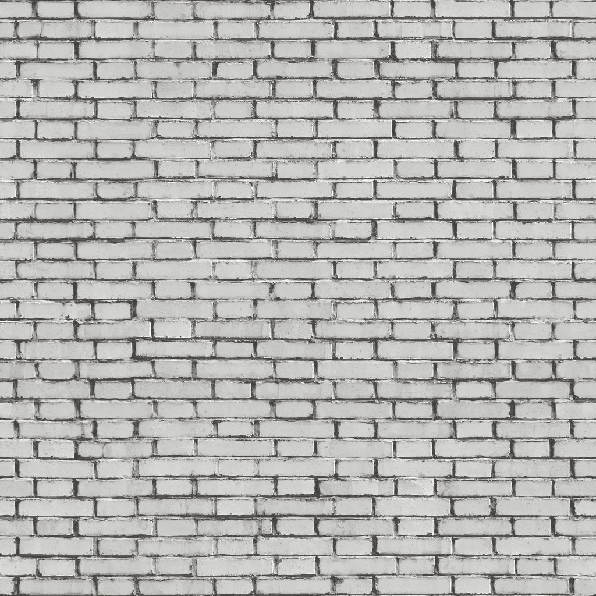

<!doctype html>
<html>
	<script src="../aframe/aframe.min.js"></script>
	<script src="../arjs/aframe-ar.js"></script>
	<a-scene embedded arjs="sourceType: webcam;">
		<a-assets>
            
        </a-assets>

		<a-marker type="pattern" url="../assets/pattern-Coat_of_Arms_of_Kryvyy_Rih.patt">
			<a-box position="-2 -1.8 -5" width="8" height="3" material="src: #texture"></a-box>
			<a-box position="-6 -1.8 -6.5" rotation="0 -75 0" color="cyan" width="4" height="3" material="src: #texture"></a-box>
			<a-box position="-2 -1.8 -6.5" rotation="0 -75 0" color="cyan" width="3" height="3" depth="2.4" material="src: #texture"></a-box>
			<a-box position="1.5 -1.8 -6" rotation="0 90 0" color="cyan" width="1" height="3" depth="0.6" material="src: #texture"></a-box>
			<a-box position="1.5 -1.8 -7" rotation="0 90 0" color="cyan" width="2" height="3" material="src: #texture"></a-box>
		</a-marker>
	</a-scene>
</html>
